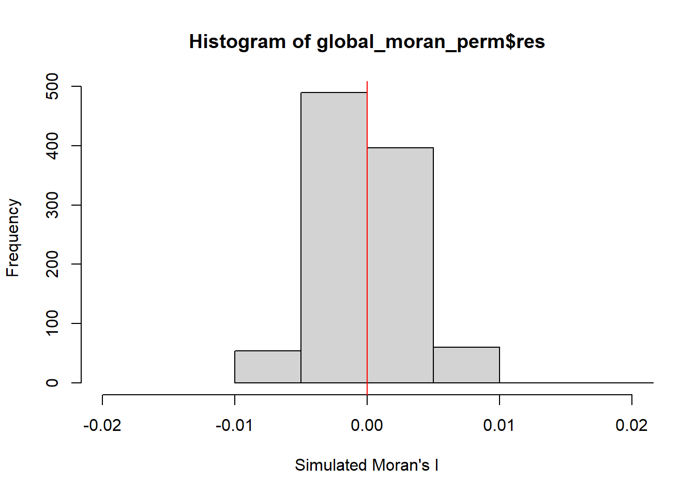

Code
install.packages("maptools", repos = "https://packagemanager.posit.co/cran/2023-10-13")The surge in dengue fever cases in Taiwan during 2023 marks a concerning deviation from the relatively stable trend observed in previous years. Despite efforts to control the disease, the drastic increase to over 26,000 cases highlights potential challenges in disease management and prevention strategies. Tainan City emerges as a focal point, bearing the brunt of this outbreak with a significant concentration of reported cases, emphasizing the need for targeted interventions and heightened vigilance in affected regions.

In this geospatial analytics research, our goal is to discover:
If the distribution of dengue fever outbreak at Tainan City, Taiwan are independent from space and time.
If the outbreak is indeed spatial and spatio-temporal dependent
where are the clusters and outliers, and the emerging hot spot/cold spot areas.
install.packages("maptools", repos = "https://packagemanager.posit.co/cran/2023-10-13")Installing the required tools for the analysis (e.g. sf, tidyverse, maptools, etc)
pacman::p_load(maptools, sf, raster, spatstat, tmap, tidyverse, arrow, lubridate, dplyr, spNetwork, spacetime, spdep, sfdep)This is where we import the data and prepare it before analysis.
Let’s use st_read() of sf package to import these two geospatial data sets into R. And we will be using other functions to prepare our data upon importing them. Moreover, we will also perform some simple operation on the datasets to gather some basic analysis.
The 2 data sets are:
TAIWAN_VILLAGE_2020, a geospatial data of village boundary of Taiwan. It is in ESRI shapefile format. The data is in Taiwan Geographic Coordinate System. (Source: Historical map data of the village boundary: TWD97 longitude and latitude)
Dengue_Daily.csv, an aspatial data of reported dengue cases in Taiwan since 1998. (Source: Dengue Daily Confirmed Cases Since 1998. Below are selected fields that are useful for this study:
發病日: Onset date
最小統計區中心點X: x-coordinate
最小統計區中心點Y: y-coordinate
Firstly, we will import the data for the Taiwan Village Data
taiwan_village_sf <- st_read(dsn = "data/geospatial", layer = "TAINAN_VILLAGE")Let’s check the referencing system info of this taiwan_village_sf
st_crs(taiwan_village_sf)Currently, we have 649 rows of data in taiwan_village_sf.

Therefore, we have to filter the taiwan_village_sf for village level of D01, D02, D04, D06, D07, D08, D32, and D39 of the Tainan City, Taiwan
#taiwan_village_sf <- st_transform(taiwan_village_sf, CRS=3414) - not needed
#filter the specific town ID from taiwan_village_sf
filtered_taiwan_village_sf <- taiwan_village_sf %>%
filter(TOWNID %in% c("D01", "D02", "D04", "D06", "D07", "D08", "D32", "D39"))Now, filtered_taiwan_village_sf will consist of 258 rows of data. This will help to reduce the amount of data that is needed to be processed in the later parts.
Since we’re happy with the dataset for filtered_taiwan_village_sf, let’s save it to a rds so that it would be easier for us to retrieve it in the future
write_rds(filtered_taiwan_village_sf, "data/rds/filtered_taiwan_village_sf.rds")Import the filtered_taiwan_village_sf rds data
filtered_taiwan_village_sf <- read_rds("data/rds/filtered_taiwan_village_sf.rds")Let’s visualise how filtered_taiwan_village_sf looks like when we plot it
tmap_mode("plot")
tm_shape(filtered_taiwan_village_sf) +
tm_dots()
Firstly, we will import the data for the Dengue Data
dengue_sf <- read_csv("data/aspatial/Dengue_Daily.csv")As dengue_sf consists of 106861 rows of data, with 26 types of variables, as shown below. Therefore we need to filter it

Let’s filter dengue_sf for fever cases that are confined to epidemiology week 31-50 of 2023, as well as the selected variables which we will be working with (發病日: Onset date, 居住縣市: County, 居住鄉鎮: Town, 居住村里: Village, 最小統計區中心點X: x-coordinate, 最小統計區中心點Y: y-coordinate)
# Filter the dataset for fever cases confined to epidemiology week 31-50, 2023
filtered_dengue_sf <- dengue_sf %>%
filter(發病日 >= "2023-07-31" & 發病日 <= "2023-12-17") %>%
select(發病日, 居住縣市, 居住鄉鎮, 居住村里, 最小統計區中心點X, 最小統計區中心點Y)In the code chunk above, we filtered the specific data that falls under the weeks that we are interested to look into. Moreover, we also use the “select” line to select the specific variables that we deemed useful for our research.
After filtering dengue_sf, and storing it in filtered_dengue_sf, the amount of data has reduced significantly from 106861 rows of data in dengue_sf, to 25480 rows of data in filtered_dengue_sf (with 3 types of variables).

Let’s check the data type of each variable before we proceed to performing left-join
str(filtered_dengue_sf)Let’s transform some of our variables and prepare it for the left-join operation in step 2.3
# Convert the columns to numeric
filtered_dengue_sf$發病日 <- as.Date(filtered_dengue_sf$發病日)
filtered_dengue_sf$最小統計區中心點X <- as.numeric(filtered_dengue_sf$最小統計區中心點X)
filtered_dengue_sf$最小統計區中心點Y <- as.numeric(filtered_dengue_sf$最小統計區中心點Y)Let’s create 3 different variables that stores the week number, month and day respectively. This is to facilitate our research and analysis in the later parts of this take-home exercise.
# Extract week number, month, and day separately
filtered_dengue_sf$epi_week_num <- format(filtered_dengue_sf$發病日, "%U")
filtered_dengue_sf$month <- format(filtered_dengue_sf$發病日, "%m")
filtered_dengue_sf$day <- format(filtered_dengue_sf$發病日, "%d")
#convert epi_week_num to numeric (for use in future steps)
filtered_dengue_sf$epi_week_num <- as.numeric(filtered_dengue_sf$epi_week_num)
#order it by week num
filtered_dengue_sf <- filtered_dengue_sf[order(filtered_dengue_sf$epi_week_num), ]
#rename 居住村里 to VILLNAME
filtered_dengue_sf <- filtered_dengue_sf %>%
rename(VILLNAME = 居住村里)
# Display the first few rows of the modified dataset
head(filtered_dengue_sf)However, in our dengue dataset, we have noticed that there are rows of data with no village name. As our research is focused mainly on the village level, we will remove the rows with village name = “None”. [SKIP FIRST]

# Remove rows with village name = "None"
filtered_dengue_sf <- filtered_dengue_sf %>%
filter(VILLNAME != "None")Since we have the finalised filtered_dengue_sf, it is important for us to create a new table to store the number of cases, grouped by the day and village. We will store it in cases_by_day_village dataset.
# Step 1: Group by day and village, then count the number of cases
cases_by_day_village <- filtered_dengue_sf %>%
group_by(發病日, VILLNAME, 最小統計區中心點X, 最小統計區中心點Y) %>%
summarise(num_cases = n())
# Step 2: Optionally, you can rename the columns for clarity
names(cases_by_day_village) <- c("Date", "Village", "XCoordinate", "YCoordinate", "Num_Cases")
# Step 3: View the resulting dataframe
head(cases_by_day_village)A snippet of the resulting dataset for cases_by_day_village looks like this:

In addition to the cases_by_day_village dataset, it would be useful for us to create a new table to store the total number of cases, grouped by the week and village. We will store it in cases_by_week_village dataset.
# Step 1: Group by week and village, then count the number of cases and retain X and Y coordinates
cases_by_week_village <- filtered_dengue_sf %>%
group_by(epi_week_num, VILLNAME) %>%
summarise(Num_Cases = n(),
XCoordinate = mean(最小統計區中心點X),
YCoordinate = mean(最小統計區中心點Y))
# Step 2: Optionally, you can rename the columns for clarity
names(cases_by_week_village) <- c("epi_week_num", "Village", "Num_Cases", "XCoordinate", "YCoordinate")
# Step 3: View the resulting dataframe
head(cases_by_week_village)A snippet of the resulting dataset for cases_by_week_village looks like this:
To get the number of cases in througout Tainan city during the whole epidemiology week 31-50, it would be useful for us to create a new table to store the number of cases for each village. We will store it in cases_by_village dataset.
# Step 1: Group by day and village, then count the number of cases
cases_by_village <- filtered_dengue_sf %>%
group_by(VILLNAME, 最小統計區中心點X, 最小統計區中心點Y) %>%
summarise(num_cases = n())
# Step 2: Optionally, you can rename the columns for clarity
names(cases_by_village) <- c("village", "XCoordinate", "YCoordinate", "Num_Cases")
# Step 3: View the resulting dataframe
head(cases_by_village)A snippet of the resulting dataset for cases_by_village looks like this:
To get the number of cases in a week througout Tainan city, it would be useful for us to create a new table to store the number of cases, grouped by the week alone. We will store it in cases_by_week dataset.
# Step 1: Group by day and village, then count the number of cases
cases_by_week <- filtered_dengue_sf %>%
group_by(epi_week_num) %>%
summarise(num_cases = n())
# Step 2: Optionally, you can rename the columns for clarity
names(cases_by_week) <- c("epi_week_num", "Num_Cases")
# Step 3: View the resulting dataframe
head(cases_by_week)A snippet of the resulting dataset for cases_by_week looks like this:

Now, we have found valuable analysis from our dataset, let’s move on to the next section where we keep them in rds form.
Since we’re happy with the dataset for filtered_taiwan_village_sf, and datasets from our analysis in 2.2.3, let’s save it to a rds so that it would be easier for us to retrieve it in the future
write_rds(filtered_dengue_sf, "data/rds/filtered_dengue_sf.rds")
write_rds(cases_by_day_village, "data/rds/cases_by_day_village.rds")
write_rds(cases_by_week_village, "data/rds/cases_by_week_village.rds")
write_rds(cases_by_week, "data/rds/cases_by_week.rds")
write_rds(cases_by_village, "data/rds/cases_by_village.rds")Import the filtered_taiwan_village_sf rds data
Let’s take a look at our Dengue datasets in 2.2 before we move on to 2.3 :)
filtered_dengue_sf

Let’s perform a join operation to combine the variables in filtered_taiwan_village_sf and filtered_dengue_sf.
Our goal is to perform the join operation to the cases_by_week_village and supplement it with the specific geospatial and relevant variable. We will be operating the join operation based on the Village Name of both dataset as we want to retrieve the distinct geospatial infromation from filtered_taiwan_village_sf for each dengue cases.
The reason for using cases_by_week_village is because we are focusing on the number of cases in each village on a weekly basis.
Before we perform the join operation, we can see that the cases_by_village is not a spatial data. As for filtered_taiwan_village_sf, we have already checked the data type of the file is already in spatial data type (TWD97).
st_crs(cases_by_week_village)Coordinate Reference System: NATherefore we have to convert the cases_by_week_village dataset into a spatial data.
Before we transform it into a spatial data, we have to vet through our data in cases_by_week_village dataset. There are rows where there are “NA” values for the village name, X and Y coordinates, which could potentially cause issues in the future analysis.

And we have to clean up the NA values before proceeding to cases_by_week_village into a spatial data.
One option that we could remove the NA values which could potentially create problems in our future analysis, and they wouldn’t provide us with accurate analysis. On the other hand, if we were to adopt the other option which is to find the mean / median of the x and y coordinates for the missing values, it would also affect the accuracy of our analysis.
# Convert cases_by_village to sf object
cases_by_week_village <- cases_by_week_village[complete.cases(cases_by_week_village[, c("XCoordinate", "YCoordinate")]), ]Now that we have cleared the NA values, let’s transform the case_by_village dataset into a sf
cases_by_week_village_sf <- st_as_sf(cases_by_week_village, coords = c("XCoordinate", "YCoordinate"))st_crs(cases_by_week_village_sf) <- st_crs(4326)Let’s transform our case_by_village dataset into a spatial dataset (in sf)
cases_by_week_village_sf <- st_transform(cases_by_week_village_sf, crs = st_crs(filtered_taiwan_village_sf))The join dataset would be named taiwan_village_dengue
# Perform spatial join
taiwan_village_dengue <- st_join(filtered_taiwan_village_sf, cases_by_week_village_sf, join = st_intersects)After performing the left-join operation, the taiwan_village_dengue dataset seems to have “NA” values. This is due to the fact that the village name (居住村里) value in the filtered_dengue_sf is not found in the list of village name (VILLNAME) in filtered_taiwan_village_sf.
st_crs(taiwan_village_dengue)Coordinate Reference System:
User input: TWD97
wkt:
GEOGCRS["TWD97",
DATUM["Taiwan Datum 1997",
ELLIPSOID["GRS 1980",6378137,298.257222101,
LENGTHUNIT["metre",1]]],
PRIMEM["Greenwich",0,
ANGLEUNIT["degree",0.0174532925199433]],
CS[ellipsoidal,2],
AXIS["geodetic latitude (Lat)",north,
ORDER[1],
ANGLEUNIT["degree",0.0174532925199433]],
AXIS["geodetic longitude (Lon)",east,
ORDER[2],
ANGLEUNIT["degree",0.0174532925199433]],
USAGE[
SCOPE["Horizontal component of 3D system."],
AREA["Taiwan, Republic of China - onshore and offshore - Taiwan Island, Penghu (Pescadores) Islands."],
BBOX[17.36,114.32,26.96,123.61]],
ID["EPSG",3824]]Let’s take a look at our newly joined dataset.

We have noticed that there are “NA” values in the Num_Cases column of the newly joined dateset.

So, we have to remove it before going to the next step. We will remove the rows with has “NA” values in the epi_week_num column.
taiwan_village_dengue <- taiwan_village_dengue[!is.na(taiwan_village_dengue$Num_Cases), ]Since we are happy with our finalised taiwan_village_dengue dataset, let’s keep it in our rds for easy reference in the future
write_rds(taiwan_village_dengue, "data/rds/taiwan_village_dengue.rds")Import the filtered_taiwan_village_sf rds data
taiwan_village_dengue <- read_rds("data/rds/taiwan_village_dengue.rds")Let’s take a look at our taiwan_village_dengue dataset :)

Let’s plot taiwan_village_dengue and see how it looks like.
We will create an “total_cases_by_village” dataset to count the number of cases in each village, and thereafter plot it on tmap, so that we can easily identify which village has a higher number of cases on the map.
# Aggregate the data to get the total number of cases for each village
total_cases_by_village <- taiwan_village_dengue %>%
group_by(VILLNAME) %>%
summarise(Total_Num_Cases = sum(Num_Cases))
# Plot the total number of cases using tmap
tmap_mode("plot")
tm_shape(total_cases_by_village) +
tm_fill(col = "Total_Num_Cases",
style = "quantile",
palette = "Blues",
title = "Total Number of Cases") +
tm_layout(main.title = "Distribution of dengue cases in Tainan City",
main.title.position = "center",
main.title.size = 1.2,
legend.height = 0.45,
legend.width = 0.35,
frame = TRUE) +
tm_borders(alpha = 0.5) +
tm_scale_bar() +
tm_grid(alpha = 0.2)Based on the map, we can see that there are some villages that have a significantly higher number of cases. If we look at our total_cases_by_village dataset, we can see that these are the villages with the highest number of cases.
In this section, we will create the a spatio-temporal cube for our dengue cases (dengue_st).
We will be using taiwan_village_dengue and filtered_taiwan_village_sf to create our spacetime data.
We have to create new dataframes to store both datasets so that the original datasets won’t be overwritten.
Firstly, we duplicate taiwan_village_dengue into cases_dengue, and filtered_taiwan_village_sf into filtered_taiwan_village_sf_filtered
cases_village <- taiwan_village_dengue
filtered_taiwan_village_sf_filtered <- filtered_taiwan_village_sf Let’s check for the number of unique villages.
# Assuming your dataset is called cases_village and the village column is named VILLNAME
unique_villages <- unique(cases_village$VILLNAME)
num_unique_villages <- length(unique_villages)
# Print the number of unique villages
print(num_unique_villages)[1] 225Since we have 228 unique villages, we are expecting to create a spacetime data (dengue_st) with 228 x 21 = 4788 rows.
Let’s check the data type of cases_village dataset.
class(cases_village)[1] "sf" "data.frame"As cases_village is still in sf format, we want to convert it into a df, as we are using it as a df for our spacetime operation.
We will also filter the “VILLNAME”, “epi_week_num” and “Num_Cases” columns which we will be using for the operation.
# Convert the spatial data to a data frame
cases_village_df <- as.data.frame(cases_village)
# Remove the geometry column
cases_village_df <- cases_village_df[, !(names(cases_village_df) %in% "geometry")]
# Select only the columns you want to keep
cases_village_df <- cases_village_df[, c("VILLNAME", "epi_week_num", "Num_Cases")]We need to convert “epi_week_num” into integer type for the spacetime operation.
# Convert epi_week_num to integer in cases_village_df
cases_village_df$epi_week_num <- as.integer(cases_village_df$epi_week_num)We need to remove the duplicate rows in our cases_village_df dataset as it would affect our spacetime operation.
# Identify duplicate rows based on selected columns
duplicate_rows <- cases_village_df[duplicated(cases_village_df[, c("VILLNAME", "epi_week_num")]), ]
# Remove duplicate rows from cases_village_df
cases_village_df <- anti_join(cases_village_df, duplicate_rows)Looking at our cases_village_df dataset, we noticed that there are missing rows as 0 cases are not recorded in the dataset. So, we will amend the dataset and add the rows for the respective village (and week) with 0 for weeks where there is no records.
# Create a complete dataset with all combinations of village names and week numbers
complete_data <- expand.grid(VILLNAME = unique(cases_village_df$VILLNAME),
epi_week_num = unique(cases_village_df$epi_week_num))
# Left join with cases_village_df to fill in missing combinations
cases_village_df <- complete_data %>%
left_join(cases_village_df, by = c("VILLNAME", "epi_week_num")) %>%
mutate(Num_Cases = ifelse(is.na(Num_Cases), 0, Num_Cases))
# Check the dimensions of complete_data
dim(cases_village_df)[1] 4725 3Let’s double check our epi_week_num data type. Make sure it is an integer.
class(cases_village_df$epi_week_num)[1] "integer"Let’s double check our VILLNAME data type. Make sure it is an character.
class(cases_village_df$VILLNAME)[1] "character"Now, we will filter filtered_taiwan_village_sf_filtered and keep the rows that has the same villages in cases_village_df.
# Get unique village names from cases_village_df
unique_villages_cases <- unique(cases_village_df$VILLNAME)
# Filter filtered_taiwan_village_sf_filtered to include only villages present in cases_village_df
filtered_taiwan_village_sf_filtered <- filtered_taiwan_village_sf_filtered[filtered_taiwan_village_sf_filtered$VILLNAME %in% unique_villages_cases, ]
# Check the number of unique villages in filtered_taiwan_village_sf_filtered
print(length(unique(filtered_taiwan_village_sf_filtered$VILLNAME)))[1] 225# Check the number of unique locations in filtered_taiwan_village_sf
num_unique_locations_filtered_taiwan_village_sf <- nrow(unique(filtered_taiwan_village_sf_filtered))
print(num_unique_locations_filtered_taiwan_village_sf)[1] 230As we can see that filtered_taiwan_village_sf_filtered has a total 233 rows, but with 228 unique village name (VILLNAME), which indicates that there is duplicated villages in the dataset. We need to remove the duplicated rows.
# Remove duplicate village names
filtered_taiwan_village_sf_filtered <- filtered_taiwan_village_sf_filtered[!duplicated(filtered_taiwan_village_sf_filtered$VILLNAME), ]
# Check the number of unique locations after removing duplicates
num_unique_locations <- nrow(unique(filtered_taiwan_village_sf_filtered$VILLNAME))
print(num_unique_locations)NULLNow, after removing the duplicated rows, let’s check to make sure both datasets has 228 rows of data before we do the spacetime operation
# Check the number of unique locations in filtered_cases_village
num_unique_locations_filtered_cases_village <- length(unique(cases_village_df$VILLNAME))
print(num_unique_locations_filtered_cases_village)[1] 225# Check the number of unique locations in filtered_taiwan_village_sf
num_unique_locations_filtered_taiwan_village_sf <- nrow(unique(filtered_taiwan_village_sf_filtered))
print(num_unique_locations_filtered_taiwan_village_sf)[1] 225Let’s perform the spacetime operation, by setting the VILLNAME as .loc_col, and epi_week_num as .time_col.
# Combine spatial and temporal data
dengue_st <- spacetime(cases_village_df, filtered_taiwan_village_sf_filtered,
.loc_col = "VILLNAME",
.time_col = "epi_week_num")
# Check the spacetime object
dengue_stThe results for the spacetime operation is too long, so let’s see a shorten version
A snippet of how the newly created dengue_st would look like
It looks like the cases_village_df, while the spacial data (geometry) is also included in the dataset, but it is not seen.
Let’s check the number of rows and columns for our newly created dengue_st
dim(dengue_st)[1] 4725 3Let’s check if dengue_st is truly a spacetime_cube
is_spacetime_cube(dengue_st)[1] TRUEWe will save dengue_st for Analysing Emerging Hotspot in 5.2.
Let’s visualize taiwan_village_dengue before we move on to performing global spatial autocorrelation analysis
equal <- tm_shape(taiwan_village_dengue) +
tm_fill("Num_Cases",
n = 5,
style = "equal") +
tm_borders(alpha = 0.5) +
tm_layout(main.title = "Equal interval classification")
quantile <- tm_shape(taiwan_village_dengue) +
tm_fill("Num_Cases",
n = 5,
style = "quantile") +
tm_borders(alpha = 0.5) +
tm_layout(main.title = "Equal quantile classification")
tmap_arrange(equal,
quantile,
asp=1,
ncol=2)
We will be performing Global Measures of Spatial Autocorrelation in this section.
Before we can perform the global spatial autocorrelation analysis, we need to construct the spatial weights of the study area. The spatial weights is used to define the neighbourhood relationships between the geographical units.
We have to prepare our dataset before computing the spatial weights
# Convert geometry to simple feature collection
taiwan_village_dengue_sf <- st_as_sf(taiwan_village_dengue)
# Find neighboring features (e.g., using contiguity)
neighbors <- st_touches(taiwan_village_dengue_sf)
# Compute spatial weights
spatial_weights <- lapply(neighbors, function(neighbor) {
# Calculate weight based on some criteria (e.g., contiguity, distance)
weight <- 1 / length(neighbor)
# Return the weight
return(weight)
})
# Assign spatial weights to the original dataset
taiwan_village_dengue$spatial_weights <- spatial_weightsThe code calculates a spatial weights matrix using the queen contiguity criterion for the villages in Taiwan represented by polygons in the taiwan_village_dengue dataset, and then provides a summary of this matrix.
# Create wm_q with spatial weights
wm_q <- taiwan_village_dengue %>%
mutate(nb = st_contiguity(geometry),
wt = st_weights(nb, style = "W"),
.before = 1)
wm_qSimple feature collection with 2885 features and 16 fields
Geometry type: POLYGON
Dimension: XY
Bounding box: xmin: 120.0627 ymin: 22.89401 xmax: 120.2925 ymax: 23.09144
Geodetic CRS: TWD97
First 10 features:
nb
1 2, 33, 34, 35, 36, 37, 38, 1533, 1534, 2070, 2071, 2072, 2073
1.1 1, 33, 34, 35, 36, 37, 38, 1533, 1534, 2070, 2071, 2072, 2073
2 4, 5, 6, 7, 1643, 1644, 1645, 1646, 1647, 1648, 1649, 1650, 1651, 1652, 1653, 1654, 1655, 1656, 1657, 1658, 1659, 1660, 1661, 1676, 1677, 1678, 1679, 1680, 1681, 1682, 1788, 1789, 1790, 1791, 1792, 1793, 1794, 1795, 1796, 1797, 1798, 1799, 2150, 2151, 2152, 2153, 2486, 2487, 2488, 2489, 2490, 2491, 2492, 2493, 2494, 2495, 2496, 2497
2.1 3, 5, 6, 7, 1643, 1644, 1645, 1646, 1647, 1648, 1649, 1650, 1651, 1652, 1653, 1654, 1655, 1656, 1657, 1658, 1659, 1660, 1661, 1676, 1677, 1678, 1679, 1680, 1681, 1682, 1788, 1789, 1790, 1791, 1792, 1793, 1794, 1795, 1796, 1797, 1798, 1799, 2150, 2151, 2152, 2153, 2486, 2487, 2488, 2489, 2490, 2491, 2492, 2493, 2494, 2495, 2496, 2497
2.2 3, 4, 6, 7, 1643, 1644, 1645, 1646, 1647, 1648, 1649, 1650, 1651, 1652, 1653, 1654, 1655, 1656, 1657, 1658, 1659, 1660, 1661, 1676, 1677, 1678, 1679, 1680, 1681, 1682, 1788, 1789, 1790, 1791, 1792, 1793, 1794, 1795, 1796, 1797, 1798, 1799, 2150, 2151, 2152, 2153, 2486, 2487, 2488, 2489, 2490, 2491, 2492, 2493, 2494, 2495, 2496, 2497
2.3 3, 4, 5, 7, 1643, 1644, 1645, 1646, 1647, 1648, 1649, 1650, 1651, 1652, 1653, 1654, 1655, 1656, 1657, 1658, 1659, 1660, 1661, 1676, 1677, 1678, 1679, 1680, 1681, 1682, 1788, 1789, 1790, 1791, 1792, 1793, 1794, 1795, 1796, 1797, 1798, 1799, 2150, 2151, 2152, 2153, 2486, 2487, 2488, 2489, 2490, 2491, 2492, 2493, 2494, 2495, 2496, 2497
2.4 3, 4, 5, 6, 1643, 1644, 1645, 1646, 1647, 1648, 1649, 1650, 1651, 1652, 1653, 1654, 1655, 1656, 1657, 1658, 1659, 1660, 1661, 1676, 1677, 1678, 1679, 1680, 1681, 1682, 1788, 1789, 1790, 1791, 1792, 1793, 1794, 1795, 1796, 1797, 1798, 1799, 2150, 2151, 2152, 2153, 2486, 2487, 2488, 2489, 2490, 2491, 2492, 2493, 2494, 2495, 2496, 2497
3 9, 10, 11, 12, 13, 14, 15, 16, 17, 18, 19, 20, 900, 901, 902, 903, 904, 905, 906, 907, 908, 909, 910, 911, 912, 913, 914, 915, 916, 917, 918, 919, 920, 921, 922, 923, 924, 925, 926, 927, 928, 2155, 2156, 2300, 2301, 2302, 2303, 2304, 2305, 2306, 2307, 2308, 2309, 2310, 2311, 2312, 2313, 2314, 2315
3.1 8, 10, 11, 12, 13, 14, 15, 16, 17, 18, 19, 20, 900, 901, 902, 903, 904, 905, 906, 907, 908, 909, 910, 911, 912, 913, 914, 915, 916, 917, 918, 919, 920, 921, 922, 923, 924, 925, 926, 927, 928, 2155, 2156, 2300, 2301, 2302, 2303, 2304, 2305, 2306, 2307, 2308, 2309, 2310, 2311, 2312, 2313, 2314, 2315
3.2 8, 9, 11, 12, 13, 14, 15, 16, 17, 18, 19, 20, 900, 901, 902, 903, 904, 905, 906, 907, 908, 909, 910, 911, 912, 913, 914, 915, 916, 917, 918, 919, 920, 921, 922, 923, 924, 925, 926, 927, 928, 2155, 2156, 2300, 2301, 2302, 2303, 2304, 2305, 2306, 2307, 2308, 2309, 2310, 2311, 2312, 2313, 2314, 2315
wt
1 0.07692308, 0.07692308, 0.07692308, 0.07692308, 0.07692308, 0.07692308, 0.07692308, 0.07692308, 0.07692308, 0.07692308, 0.07692308, 0.07692308, 0.07692308
1.1 0.07692308, 0.07692308, 0.07692308, 0.07692308, 0.07692308, 0.07692308, 0.07692308, 0.07692308, 0.07692308, 0.07692308, 0.07692308, 0.07692308, 0.07692308
2 0.01724138, 0.01724138, 0.01724138, 0.01724138, 0.01724138, 0.01724138, 0.01724138, 0.01724138, 0.01724138, 0.01724138, 0.01724138, 0.01724138, 0.01724138, 0.01724138, 0.01724138, 0.01724138, 0.01724138, 0.01724138, 0.01724138, 0.01724138, 0.01724138, 0.01724138, 0.01724138, 0.01724138, 0.01724138, 0.01724138, 0.01724138, 0.01724138, 0.01724138, 0.01724138, 0.01724138, 0.01724138, 0.01724138, 0.01724138, 0.01724138, 0.01724138, 0.01724138, 0.01724138, 0.01724138, 0.01724138, 0.01724138, 0.01724138, 0.01724138, 0.01724138, 0.01724138, 0.01724138, 0.01724138, 0.01724138, 0.01724138, 0.01724138, 0.01724138, 0.01724138, 0.01724138, 0.01724138, 0.01724138, 0.01724138, 0.01724138, 0.01724138
2.1 0.01724138, 0.01724138, 0.01724138, 0.01724138, 0.01724138, 0.01724138, 0.01724138, 0.01724138, 0.01724138, 0.01724138, 0.01724138, 0.01724138, 0.01724138, 0.01724138, 0.01724138, 0.01724138, 0.01724138, 0.01724138, 0.01724138, 0.01724138, 0.01724138, 0.01724138, 0.01724138, 0.01724138, 0.01724138, 0.01724138, 0.01724138, 0.01724138, 0.01724138, 0.01724138, 0.01724138, 0.01724138, 0.01724138, 0.01724138, 0.01724138, 0.01724138, 0.01724138, 0.01724138, 0.01724138, 0.01724138, 0.01724138, 0.01724138, 0.01724138, 0.01724138, 0.01724138, 0.01724138, 0.01724138, 0.01724138, 0.01724138, 0.01724138, 0.01724138, 0.01724138, 0.01724138, 0.01724138, 0.01724138, 0.01724138, 0.01724138, 0.01724138
2.2 0.01724138, 0.01724138, 0.01724138, 0.01724138, 0.01724138, 0.01724138, 0.01724138, 0.01724138, 0.01724138, 0.01724138, 0.01724138, 0.01724138, 0.01724138, 0.01724138, 0.01724138, 0.01724138, 0.01724138, 0.01724138, 0.01724138, 0.01724138, 0.01724138, 0.01724138, 0.01724138, 0.01724138, 0.01724138, 0.01724138, 0.01724138, 0.01724138, 0.01724138, 0.01724138, 0.01724138, 0.01724138, 0.01724138, 0.01724138, 0.01724138, 0.01724138, 0.01724138, 0.01724138, 0.01724138, 0.01724138, 0.01724138, 0.01724138, 0.01724138, 0.01724138, 0.01724138, 0.01724138, 0.01724138, 0.01724138, 0.01724138, 0.01724138, 0.01724138, 0.01724138, 0.01724138, 0.01724138, 0.01724138, 0.01724138, 0.01724138, 0.01724138
2.3 0.01724138, 0.01724138, 0.01724138, 0.01724138, 0.01724138, 0.01724138, 0.01724138, 0.01724138, 0.01724138, 0.01724138, 0.01724138, 0.01724138, 0.01724138, 0.01724138, 0.01724138, 0.01724138, 0.01724138, 0.01724138, 0.01724138, 0.01724138, 0.01724138, 0.01724138, 0.01724138, 0.01724138, 0.01724138, 0.01724138, 0.01724138, 0.01724138, 0.01724138, 0.01724138, 0.01724138, 0.01724138, 0.01724138, 0.01724138, 0.01724138, 0.01724138, 0.01724138, 0.01724138, 0.01724138, 0.01724138, 0.01724138, 0.01724138, 0.01724138, 0.01724138, 0.01724138, 0.01724138, 0.01724138, 0.01724138, 0.01724138, 0.01724138, 0.01724138, 0.01724138, 0.01724138, 0.01724138, 0.01724138, 0.01724138, 0.01724138, 0.01724138
2.4 0.01724138, 0.01724138, 0.01724138, 0.01724138, 0.01724138, 0.01724138, 0.01724138, 0.01724138, 0.01724138, 0.01724138, 0.01724138, 0.01724138, 0.01724138, 0.01724138, 0.01724138, 0.01724138, 0.01724138, 0.01724138, 0.01724138, 0.01724138, 0.01724138, 0.01724138, 0.01724138, 0.01724138, 0.01724138, 0.01724138, 0.01724138, 0.01724138, 0.01724138, 0.01724138, 0.01724138, 0.01724138, 0.01724138, 0.01724138, 0.01724138, 0.01724138, 0.01724138, 0.01724138, 0.01724138, 0.01724138, 0.01724138, 0.01724138, 0.01724138, 0.01724138, 0.01724138, 0.01724138, 0.01724138, 0.01724138, 0.01724138, 0.01724138, 0.01724138, 0.01724138, 0.01724138, 0.01724138, 0.01724138, 0.01724138, 0.01724138, 0.01724138
3 0.01694915, 0.01694915, 0.01694915, 0.01694915, 0.01694915, 0.01694915, 0.01694915, 0.01694915, 0.01694915, 0.01694915, 0.01694915, 0.01694915, 0.01694915, 0.01694915, 0.01694915, 0.01694915, 0.01694915, 0.01694915, 0.01694915, 0.01694915, 0.01694915, 0.01694915, 0.01694915, 0.01694915, 0.01694915, 0.01694915, 0.01694915, 0.01694915, 0.01694915, 0.01694915, 0.01694915, 0.01694915, 0.01694915, 0.01694915, 0.01694915, 0.01694915, 0.01694915, 0.01694915, 0.01694915, 0.01694915, 0.01694915, 0.01694915, 0.01694915, 0.01694915, 0.01694915, 0.01694915, 0.01694915, 0.01694915, 0.01694915, 0.01694915, 0.01694915, 0.01694915, 0.01694915, 0.01694915, 0.01694915, 0.01694915, 0.01694915, 0.01694915, 0.01694915
3.1 0.01694915, 0.01694915, 0.01694915, 0.01694915, 0.01694915, 0.01694915, 0.01694915, 0.01694915, 0.01694915, 0.01694915, 0.01694915, 0.01694915, 0.01694915, 0.01694915, 0.01694915, 0.01694915, 0.01694915, 0.01694915, 0.01694915, 0.01694915, 0.01694915, 0.01694915, 0.01694915, 0.01694915, 0.01694915, 0.01694915, 0.01694915, 0.01694915, 0.01694915, 0.01694915, 0.01694915, 0.01694915, 0.01694915, 0.01694915, 0.01694915, 0.01694915, 0.01694915, 0.01694915, 0.01694915, 0.01694915, 0.01694915, 0.01694915, 0.01694915, 0.01694915, 0.01694915, 0.01694915, 0.01694915, 0.01694915, 0.01694915, 0.01694915, 0.01694915, 0.01694915, 0.01694915, 0.01694915, 0.01694915, 0.01694915, 0.01694915, 0.01694915, 0.01694915
3.2 0.01694915, 0.01694915, 0.01694915, 0.01694915, 0.01694915, 0.01694915, 0.01694915, 0.01694915, 0.01694915, 0.01694915, 0.01694915, 0.01694915, 0.01694915, 0.01694915, 0.01694915, 0.01694915, 0.01694915, 0.01694915, 0.01694915, 0.01694915, 0.01694915, 0.01694915, 0.01694915, 0.01694915, 0.01694915, 0.01694915, 0.01694915, 0.01694915, 0.01694915, 0.01694915, 0.01694915, 0.01694915, 0.01694915, 0.01694915, 0.01694915, 0.01694915, 0.01694915, 0.01694915, 0.01694915, 0.01694915, 0.01694915, 0.01694915, 0.01694915, 0.01694915, 0.01694915, 0.01694915, 0.01694915, 0.01694915, 0.01694915, 0.01694915, 0.01694915, 0.01694915, 0.01694915, 0.01694915, 0.01694915, 0.01694915, 0.01694915, 0.01694915, 0.01694915
VILLCODE COUNTYNAME TOWNNAME VILLNAME VILLENG COUNTYID COUNTYCODE
1 67000350032 臺南市 安南區 青草里 Qingcao Vil. D 67000
1.1 67000350032 臺南市 安南區 青草里 Qingcao Vil. D 67000
2 67000270011 臺南市 仁德區 保安里 Bao'an Vil. D 67000
2.1 67000270011 臺南市 仁德區 保安里 Bao'an Vil. D 67000
2.2 67000270011 臺南市 仁德區 保安里 Bao'an Vil. D 67000
2.3 67000270011 臺南市 仁德區 保安里 Bao'an Vil. D 67000
2.4 67000270011 臺南市 仁德區 保安里 Bao'an Vil. D 67000
3 67000370005 臺南市 中西區 赤嵌里 Chihkan Vil. D 67000
3.1 67000370005 臺南市 中西區 赤嵌里 Chihkan Vil. D 67000
3.2 67000370005 臺南市 中西區 赤嵌里 Chihkan Vil. D 67000
TOWNID TOWNCODE NOTE epi_week_num Village Num_Cases
1 D06 67000350 <NA> 37 青草里 1
1.1 D06 67000350 <NA> 41 青草里 1
2 D32 67000270 <NA> 31 保安里 1
2.1 D32 67000270 <NA> 37 保安里 3
2.2 D32 67000270 <NA> 41 保安里 5
2.3 D32 67000270 <NA> 41 安康里 12
2.4 D32 67000270 <NA> 45 安東里 7
3 D08 67000370 <NA> 35 赤嵌里 4
3.1 D08 67000370 <NA> 36 赤嵌里 1
3.2 D08 67000370 <NA> 37 赤嵌里 4
geometry spatial_weights
1 POLYGON ((120.1176 23.08387... Inf
1.1 POLYGON ((120.1176 23.08387... Inf
2 POLYGON ((120.2304 22.93544... 0.01851852
2.1 POLYGON ((120.2304 22.93544... 0.01851852
2.2 POLYGON ((120.2304 22.93544... 0.01851852
2.3 POLYGON ((120.2304 22.93544... 0.01851852
2.4 POLYGON ((120.2304 22.93544... 0.01851852
3 POLYGON ((120.2012 22.99966... 0.0212766
3.1 POLYGON ((120.2012 22.99966... 0.0212766
3.2 POLYGON ((120.2012 22.99966... 0.0212766We will compute the Global Moran’s I value
moranI <- global_moran(wm_q$Num_Cases,
wm_q$nb,
wm_q$wt)
glimpse(moranI)List of 2
$ I: num 0.136
$ K: num 15.1We will be using Moran’s I statistics to test our taiwan_village_dengue dataset.
Moran I test under randomisation
data: x
weights: listw
Moran I statistic standard deviate = 45.35, p-value < 2.2e-16
alternative hypothesis: greater
sample estimates:
Moran I statistic Expectation Variance
1.360062e-01 -3.467406e-04 9.040175e-06 Based on the output, the Moran I statistic standard deviate measures the degree of spatial autocorrelation in the variable, Num_cases, in the taiwan_viilage_dengue dataset. In this case, it is 25.476, which indicates a high level of spatial autocorrelation.
In addition, the p-value is very low, at less than 2.2e-16, which indicates that the the spatial correlation is statistically significant. This rejects the null hypothesis that there is no spatial autocorrelation in the data.
The Moran I statistic of 0.073 also indicates that there is a positive spatial autocorrelation.
Based on the above explanation, it suggests that the areas with high number of dengue cases tend to be clustered together geographically.
Let’s perform simulation on our Moran’s I test
set.seed(1234)
# Compute Monte Carlo Moran's I
global_moran_perm <- global_moran_perm(wm_q$Num_Cases, # Variable of interest
wm_q$nb, # Neighbour list object
wm_q$wt, # Spatial weights object
nsim = 999) # Number of permutations
global_moran_perm
Monte-Carlo simulation of Moran I
data: x
weights: listw
number of simulations + 1: 1000
statistic = 0.13601, observed rank = 1000, p-value < 2.2e-16
alternative hypothesis: two.sidedThe result indicates that the spatial autocorrelation is statistically significant with the p-value of less than 0.01.
Let’s display our findings in a histogram so that we can visualise it better
Firstly, we can get a statistical summary of the Monte Carlo Moran’s I output
summary(global_moran_perm$res[1:999]) Min. 1st Qu. Median Mean 3rd Qu. Max.
-0.0088665 -0.0025018 -0.0002897 -0.0001968 0.0017910 0.0094111 Now, we can plot the histogram
hist(global_moran_perm$res,
freq=TRUE,
breaks=50,
xlab="Simulated Moran's I",
xlim=c(-0.02,0.02))
abline(v=0,
col="red") 
We will compute the Local Moran’s I value
lisa <- wm_q %>%
mutate(local_moran = local_moran(
Num_Cases, nb, wt, nsim = 99),
.before = 1) %>%
unnest(local_moran)The above code would create a new sf file called “lisa” which stores the important information for the local moran’s I values (such as ii, eii, var_ii, etc)

For effective comparison, it will be better for us to plot both maps next to each other as shown below.
We will create a choropeth map by using the values in the “ii” field in lisa sf for the local Moran’s I, and the values in the “p_ii_sim” field in lisa sf for the p-value.
tmap_mode("plot")
map1 <- tm_shape(lisa) +
tm_fill("ii") +
tm_borders(alpha = 0.5) +
tm_view(set.zoom.limits = c(6,8)) +
tm_layout(main.title = "local Moran's I of Num_Cases",
main.title.size = 0.8)
map2 <- tm_shape(lisa) +
tm_fill("p_ii",
breaks = c(0, 0.001, 0.01, 0.05, 1),
labels = c("0.001", "0.01", "0.05", "Not sig")) +
tm_borders(alpha = 0.5) +
tm_layout(main.title = "p-value of local Moran's I",
main.title.size = 0.8)
tmap_arrange(map1, map2, ncol = 2)We will plot the LISA map to check for any kinds of outliers and clusters. It is done by combining the Local Moran’s I of the different areas and their respective p-values.
lisa_sig <- lisa %>%
filter(p_ii < 0.05)
tmap_mode("plot")
tm_shape(lisa) +
tm_polygons() +
tm_borders(alpha = 0.5) +
tm_shape(lisa_sig) +
tm_fill("mean") +
tm_borders(alpha = 0.4)
Based on the above map, and comparing it with our initial distribution map (below), we can observe that:
Areas highlighted in red as classified as High-High Clusters (red), where there are a high number of dengue cases, and it could also indicate that it is surrounded by areas with high dengue case counts. Comparing it to our initial distribution map that we plot in the beginning (in our join-operation), we can see that the areas with higher dengue cases are situated in area where it is highlighted in a darker shade of blue (ranging from 76.2 to 616.0 cases)
Areas highlighted in red as classified as Low-Low Clusters (green), where there are a lower number of dengue cases, and it could also indicate that it is surrounded by areas with low dengue case counts. Comparing to the initial distribution map (shown before this), we can see that the Low-Low Clusters are mostly situated at areas where there are lower number of cases (below 47.8)
For both types of outliers, the High-Low (highlighted in yellow) and Low-High (highlighted in purple) outlier areas, they are a high and low number of cases respectively. However, they are surrounded by areas where there is a low or high number of cases respectively, which is contradictory to the actual situation in their areas.
For High-Low outlier areas, it means that local authorities should seriously look into these areas as they are more prone to an outbreak or transmission, even though they are surrounded by areas with low case counts.
For Low-High outlier areas, it means that the area is well-prepared with preventive measures when there is an outbreak or transmission. This means that it is worth looking into the preventive strategies that they have in-place, which could be adopted by the areas with high case counts in the future.
It is interesting to gain more insights into the different areas by filtering the areas based on the Moran’s I test and p-value, which has significantly helped in identifying clusters which have a high or low number of cases.
It is also able to identify outlier areas which is interesting to dive into as it indicates which area is more prone to an outbreak, or area where preventive measures are in-place, despite being surrounded by areas which has a different case counts.
After performing the Global and Local Autocorrelation Analysis, let us move on to Analysing the Emerging Hotspots in our research in the dengue cases in Tainan City.
In the previous section, we have used Moran’s I to identify clusters and outliers.
Now, we will use Gi*, which is a spatial autocorrelation statistic tool, to identify statistically hot (clusters of high values) or cold spots (clusters of low values) based on spatial weights.
We have to compute the spatial weights before we can proceed to computing the local Gi* statistics
wm_idw <- taiwan_village_dengue %>%
mutate(nb = st_contiguity(geometry),
wt = st_inverse_distance(nb, geometry,
scale = 1,
alpha = 1),
.before = 1)Next, we will compute the local Gi* statistics
HCSA <- wm_idw %>%
mutate(local_Gi = local_gstar_perm(
Num_Cases, nb, wt, nsim = 99),
.before = 1) %>%
unnest(local_Gi)
HCSASimple feature collection with 2885 features and 24 fields
Geometry type: POLYGON
Dimension: XY
Bounding box: xmin: 120.0627 ymin: 22.89401 xmax: 120.2925 ymax: 23.09144
Geodetic CRS: TWD97
# A tibble: 2,885 × 25
gi_star e_gi var_gi p_value p_sim p_folded_sim skewness kurtosis nb
<dbl> <dbl> <dbl> <dbl> <dbl> <dbl> <dbl> <dbl> <nb>
1 -2.67 0.000329 8.45e-9 -2.75 0.00592 0.02 0.01 0.424 <int>
2 -2.67 0.000315 9.20e-9 -2.50 0.0125 0.02 0.01 0.693 <int>
3 -2.16 0.000350 2.53e-9 -2.16 0.0304 0.02 0.01 0.248 <int>
4 -2.16 0.000350 1.76e-9 -2.60 0.00943 0.02 0.01 0.0297 <int>
5 -2.16 0.000353 2.61e-9 -2.19 0.0282 0.04 0.02 0.411 <int>
6 -2.16 0.000355 1.79e-9 -2.71 0.00674 0.02 0.01 0.252 <int>
7 -2.16 0.000352 2.18e-9 -2.38 0.0174 0.02 0.01 0.477 <int>
8 -0.485 0.000346 2.31e-9 -0.479 0.632 0.76 0.38 0.528 <int>
9 -0.485 0.000353 2.75e-9 -0.561 0.574 0.52 0.26 0.256 <int>
10 -0.485 0.000348 2.28e-9 -0.514 0.607 0.62 0.31 0.475 <int>
# ℹ 2,875 more rows
# ℹ 16 more variables: wt <list>, VILLCODE <chr>, COUNTYNAME <chr>,
# TOWNNAME <chr>, VILLNAME <chr>, VILLENG <chr>, COUNTYID <chr>,
# COUNTYCODE <chr>, TOWNID <chr>, TOWNCODE <chr>, NOTE <chr>,
# epi_week_num <dbl>, Village <chr>, Num_Cases <int>, geometry <POLYGON [°]>,
# spatial_weights <list>tmap_mode("plot")
tm_shape(HCSA) +
tm_fill("gi_star") +
tm_borders(alpha = 0.5) +
tm_view(set.zoom.limits = c(6,8))From the above plot, we are able to see the spatial clustering pattern. We could see that most of the area have a lower density (in orange).
Let’s plot the p-value of the areas to check the significance level
tmap_mode("plot")
tm_shape(HCSA) +
tm_fill("p_sim") +
tm_borders(alpha = 0.5)We can see that some areas have a higher significance level (in dark brown), while most of it have a lower significance level (in beige)
Now, let’s put both maps (Gi* and p-value) side by side to make a comparison
tmap_mode("plot")
map1 <- tm_shape(HCSA) +
tm_fill("gi_star") +
tm_borders(alpha = 0.5) +
tm_view(set.zoom.limits = c(6,8)) +
tm_layout(main.title = "Gi* of GDPPC",
main.title.size = 0.8)
map2 <- tm_shape(HCSA) +
tm_fill("p_value",
breaks = c(0, 0.001, 0.01, 0.05, 1),
labels = c("0.001", "0.01", "0.05", "Not sig")) +
tm_borders(alpha = 0.5) +
tm_layout(main.title = "p-value of Gi*",
main.title.size = 0.8)
tmap_arrange(map1, map2, ncol = 2)
Based on the maps, we can see an obvious trend, which is that areas with lower density for Gi* (means lower number of dengue cluster) has a low p-value (0.001). This means that areas with lower number of dengue cluster has a higher significance level, and that indicates that the dengue cases are influenced by geographic proximity.
Now, we can plot the significant hotspot and coldspot (p-values less than 0.05)
HCSA_sig <- HCSA %>%
filter(p_sim < 0.05)
tmap_mode("plot")
tm_shape(HCSA) +
tm_polygons() +
tm_borders(alpha = 0.5) +
tm_shape(HCSA_sig) +
tm_fill("gi_star") +
tm_borders(alpha = 0.4)
From the map, we can observe that:
There is 1 significant hotspot in the middle of the map (in dark green), with gi_star between 15-20, which indicates that it has a higher dengue cluster, and is surrounded by areas which are hotspots too.
There are a few smaller hotspots (light green) scattered around the middle of the map.
The areas towards the sides of the map has a number of coldspots (light orange), with gi_star value between -5 to 0, which indicates there is a low dengue cluster.
Let’s find the details of the hotspot and coldspot, which we will be using it in 5.2 in analysing emerging hotspots
# Filter HCSA to include only rows where p_sim < 0.05
HCSA_sig <- HCSA %>%
filter(p_sim < 0.05)
# Find the row with the highest gi_star among the filtered data
hotspot <- HCSA_sig %>%
filter(gi_star == max(gi_star))
# Print the hotspot
cat("Hotspot with the highest gi_star and p_sim < 0.05:", hotspot$VILLNAME, "\n")Hotspot with the highest gi_star and p_sim < 0.05: 溪墘里 溪墘里 溪墘里 溪墘里 溪墘里 溪墘里 溪墘里 溪墘里 溪墘里 溪墘里 溪墘里 溪墘里 溪墘里 溪墘里 溪墘里 So, 溪墘里 is the hotspot. :)
Since we have computed the Gi* values, which shows us the Hotspots and Coldspots, we will move on to performing Mann-Kendall test to look for any trend in the spots.
However, we need to compute the local Gi* statistics using the spacetime dataset, dengue_st, which we have created in 2.4.
We will use dengue_st to compute the Gi*, where the geometry is in the spacetime dataset.
# Activate the geometry column
dengue_st <- activate(dengue_st, "geometry")
# Create spatial weights
tainan_dengue_nb <- dengue_st %>%
mutate(nb = st_contiguity(geometry),
wt = st_inverse_distance(nb, geometry, scale = 1, alpha = 1),
.before = 1) %>%
set_nbs("nb") %>%
set_wts("wt")Let’s look at the first 5 rows
head(tainan_dengue_nb) VILLNAME epi_week_num Num_Cases nb
451 青草里 31 0 6, 118, 157
452 保安里 31 1 126, 136, 164, 190
453 赤嵌里 31 0 68, 69, 166, 177
454 大成里 31 0 94, 97, 100, 104
455 城北里 31 0 12, 13, 216, 222
456 城南里 31 0 1, 12, 13, 118, 157, 216
wt
451 0.3730707, 0.5166453, 0.3002859
452 0.3310971, 0.3966444, 0.7717933, 0.8772257
453 1.223481, 1.545931, 1.357812, 1.700209
454 1.286031, 2.993138, 1.862438, 2.166602
455 1.4041477, 1.1310013, 0.6159622, 0.4135746
456 0.3730707, 0.7009117, 0.4433391, 0.3101907, 0.3335912, 0.3828707Now, we need to compute the Local Gi* for each villages, using the tainan_dengue_nb which we have created in 5.1.
gi_stars <- tainan_dengue_nb %>%
group_by(epi_week_num) %>%
mutate(gi_star = ifelse(sapply(nb, is.list),
local_gstar_perm(Num_Cases, nb, wt),
NA_real_)) %>%
filter(!is.na(gi_star)) %>%
unnest(gi_star)Now, we will use Mann-Kendall Test to evaluate the trend of the hotspot. We have previously found that 溪墘里 is the hotspot when we were analysing HCSA in step 5.1, so we will input 溪墘里 into our mann-kendall test
cbg <- gi_stars %>%
ungroup() %>%
filter(VILLNAME == "溪墘里") |>
select(VILLNAME, epi_week_num, gi_star)Let’s install Kendall
install.packages("Kendall")Let’s plot the result using ggplot2
ehsa <- gi_stars %>%
group_by(VILLNAME) %>%
summarise(mk = list(
unclass(
Kendall::MannKendall(gi_star)))) %>%
tidyr::unnest_wider(mk)It is interesting to use the different tools, such as Local and Global spatial autocorrelation, to find the clusters or hotspots within the area of focus, in this case it is the dengue cases in Tainan City. Through this exercise, we are able to find out which village has the highest number of dengue cases, and with the highest cluster. In addition, it would be beneficial for relevant authorities to see which village requires evaluation in their precautionary measure against dengue (in areas with high cluster), and how areas with low clusters are able to keep their case counts low even during a peak dengue season.
This has showed that the distribution of dengue fever outbreak at Tainan City, Taiwan are dependent on space and time, as the numbers differs from villages, and the numbers changes over the week. Moreover, we are able to determine if the distribution of dengue cases are spatial and spatio-temporal dependent.
Lastly, we are able to identify the hotspots with high cluster in our analysis. Furthermore, we identified other villages with smaller clusters and low number of cases.